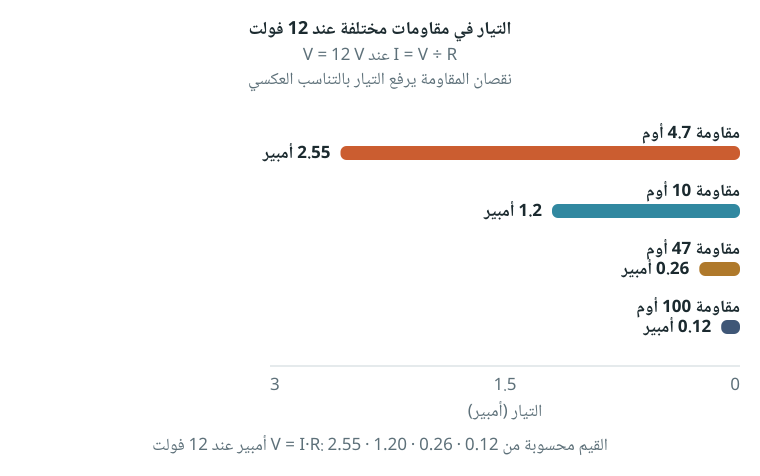

قانون أوم
Ohm's Law
علاقة خطية بين فرق الكمون والتيار في موصل مقاومته ثابتة: V = I·R. تصحّ في المواد الأومية عند ثبات الحرارة، وتفشل في الصمام الثنائي والمصباح المتوهّج حيث تعتمد المقاومة على الجهد أو الحرارة.
قانون أوم يربط فرق الكمون بين طرفي موصل بالتيار المارّ فيه: V = I·R. الواحد أوم مقاومة يمرّ فيها أمبير واحد عند فولت واحد، أي 1 Ω = 1 V/A. العلاقة خطية بشرط أن تبقى R مستقلّة عن التيار والجهد، وهذا الشرط تحديدًا هو ما يفصل الموصل الأومي عن غيره، لا شكل المعادلة.
المقاومة خاصية هندسية ومادية في الوقت نفسه: R = ρ·L/A، فتزيد بطول السلك وتنقص بمساحة مقطعه، ويحدّدها ثابت المادة ρ. حرارة الموصل ترفع ρ في المعادن، فينحرف الخط عن استقامته. مصباح وهاج من التنجستن تبلغ مقاومته أثناء الإضاءة نحو عشرة أمثال مقاومته وهو بارد، ولهذا يمرّ فيه تيار بدء أعلى بكثير من تيار التشغيل المستقر.
كيف تعمل الظاهرة؟
المجال الكهربائي E = V/L يبذل على كل إلكترون قوة e·E، فتتسارع الإلكترونات بين تصادمين متتاليين. متوسط الزمن الحرّ τ هو ما يحدّد سرعة الانسياب v_d = e·E·τ/m، والتصادمات مع الشبكة البلورية ومع الاهتزازات الحرارية (فونونات) هي التي تحوّل الطاقة الحركية إلى حرارة في الموصل. كثافة التيار J = n·e·v_d، وبالتعويض تأخذ الشكل J = σ·E حيث σ = n·e²·τ/m. معنى ذلك أن خطية قانون أوم ليست قانونًا مستقلًّا، بل نتيجة أن τ لا يعتمد على E في المجالات المنخفضة؛ وحين يبدأ اعتماده يبدأ الانحراف.
العلاقة بالأرقام
سخّان قدرته 1,000 W على شبكة 230 V: I = P/V = 4.35 A، ومقاومته R = V²/P = 52.9 Ω. سلك نحاسي طوله متر ومساحة مقطعه 2.5 mm² بمقاومية 1.68×10⁻⁸ Ω·m يعطي R = ρ·L/A = 6.7×10⁻³ Ω. سرعة انسياب الإلكترونات فيه عند 10 A هي v_d = I/(n·A·e) = 0.29 mm/ث، بكثافة إلكترونات حرة n = 8.5×10²⁸ m⁻³. الفارق بين 0.29 mm/ث وسرعة الإشارة القريبة من الضوء يوضّح أن نقل الطاقة يجري في المجال المحيط بالسلك لا في انتقال الشحنة نفسها.
مفاهيم متقاربة
يُظنّ أن قانون أوم صالح لكل جسم، والصحيح أنه خاصة مادية: المقاومات المعدنية والكربونية تحققه في مداها، أما الصمام الثنائي والترانزستور والمصباح المتوهّج فلا، لأن R عندها دالة في V أو في T. وثمة خلط بين المقاومة والمقاومية: الأولى بالأوم وتخصّ جسمًا بعينه، والثانية بالأوم·متر وتخصّ المادة، ولا تتحوّل إحداهما إلى الأخرى إلا بالضرب في L/A. وخلط ثالث يجعل التيار يفرض الجهد، والصحيح أن المصدر يفرض فرق الكمون فيسحب الحمل تيارًا بحسب مقاومته.
حدود التطبيق
القانون يفشل في ثلاثة مواضع. في المجالات العالية تنخفض حركية الحاملات لأن الطاقة المكتسبة بين تصادمين تصبح كبيرة، فتقلّ σ وينحني الخط. في أشباه الموصلات يتضاعف عدد الحاملات تقريبًا كل 10 K، فتصير R شديدة الاعتماد على الحرارة لا ثابتة. في الموصلات الفائقة تصبح R صفرًا تحت درجة حرجة، ويبقى V = 0 لأي تيار أقل من التيار الحرج؛ وهي حالة ينهار فيها مفهوم المقاومة بدل أن يصفها القانون. يضاف إلى ذلك أن القانون لا يذكر الاتجاه، لكنه يُطبَّق في الاتجاهين بالتساوي في الموصل الأومي.

| الكمية | القيمة | المصدر |
|---|---|---|
| التيار في سخّان 1,000 W على 230 V | 4.35 أمبير | [1] |
| مقاومة السخّان نفسه | 52.9 أوم | [1] |
| مقاومية النحاس عند 20 °C | 1.68×10⁻⁸ أوم·متر | [2] |
| سرعة انسياب الإلكترونات في سلك 2.5 mm² عند 10 A | 0.29 مليمتر/ثانية | [3] |
المصادر
- 1 Ohm's Law — OpenStax, University Physics Volume 2. openstax.org/books/university-physics-volume-2/pages/9-4-ohms-law · اطُّلع عليه 2026-11-16
- 2 Model of Conduction in Metals — OpenStax, University Physics Volume 2. openstax.org/books/university-physics-volume-2/pages/9-2-model-of-conduction-in-metals · اطُّلع عليه 2026-11-16
- 3 Electrical Current — OpenStax, University Physics Volume 2. openstax.org/books/university-physics-volume-2/pages/9-1-electrical-current · اطُّلع عليه 2026-11-16
استشهد بهذا المصطلح
الصيغتان مبنيتان من بيانات الصفحة نفسها: العنوان والتاريخ ورابط النسخة المنشورة.
قانون أوم — Ohm's Law. (2026). ديوان المعرفة — انفراد. https://infiradev.com/diwan/terms/ohms-law.html
@misc{ohms-law2026,
title = {قانون أوم},
titleaddon = {Ohm's Law},
howpublished = {{ديوان المعرفة — انفراد} — مرجع علمي عربي},
year = {2026},
url = {https://infiradev.com/diwan/terms/ohms-law.html},
urldate = {2026-11-16},
note = {مراجعة علمية: مراجعة آلية — ديوان المعرفة (روابط المصادر + عقد المحتوى + وجود الرسم) 2026-11-16}
}
راجعه: مراجعة آلية — ديوان المعرفة (روابط المصادر + عقد المحتوى + وجود الرسم) 2026-11-16 · 2026-11-16 · آخر تحديث 2026-11-16